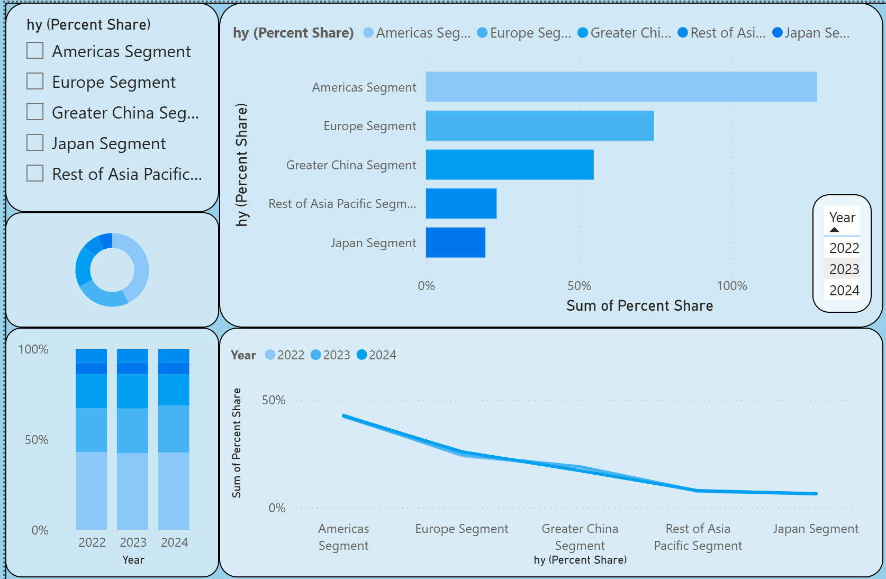
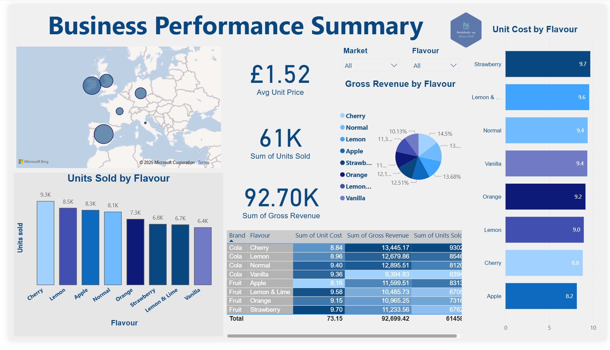
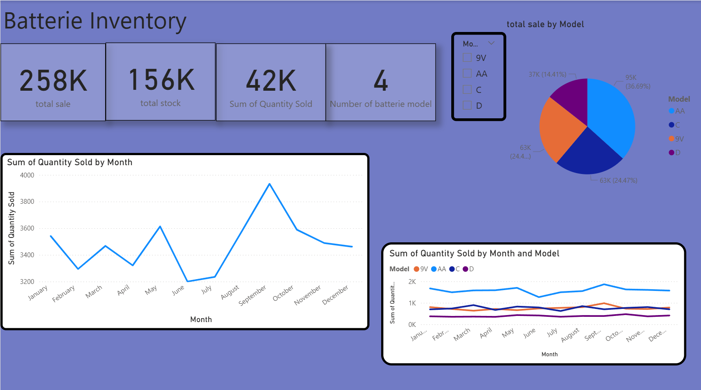
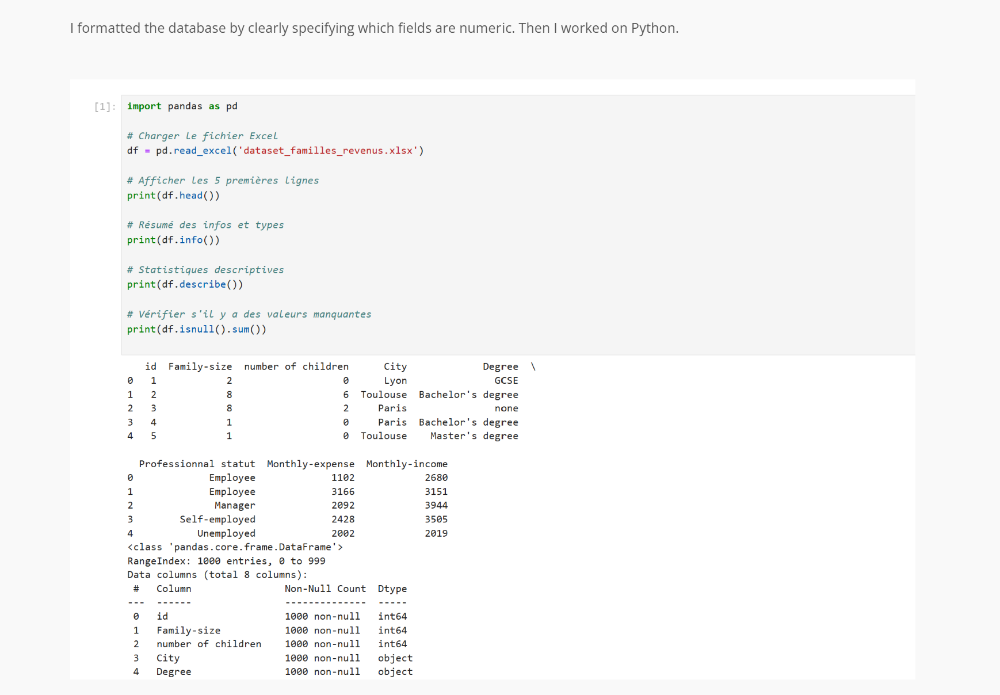
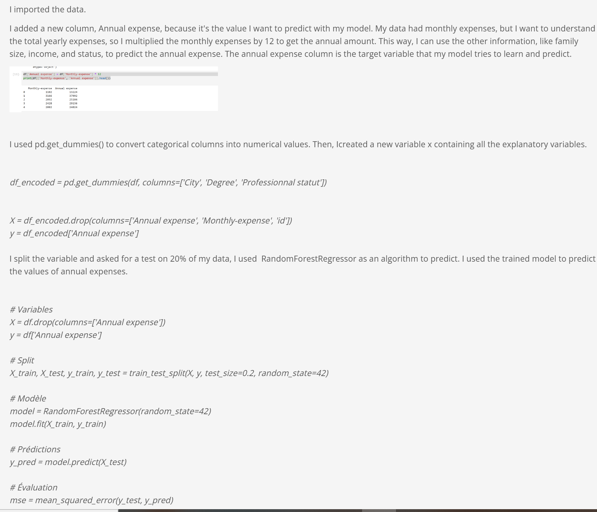
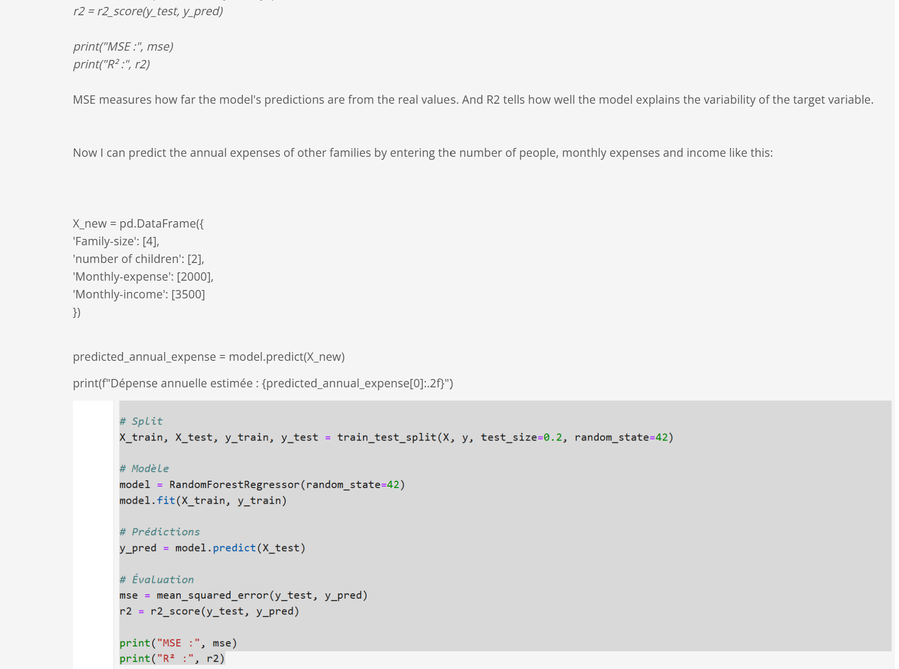
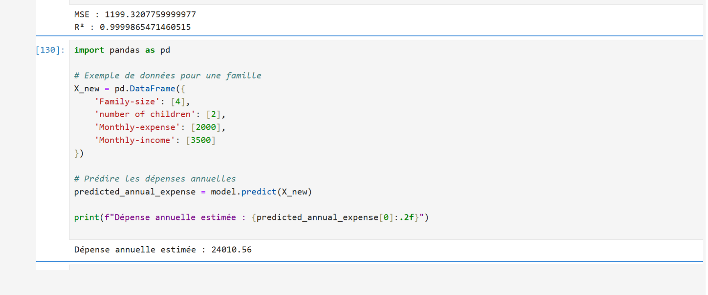
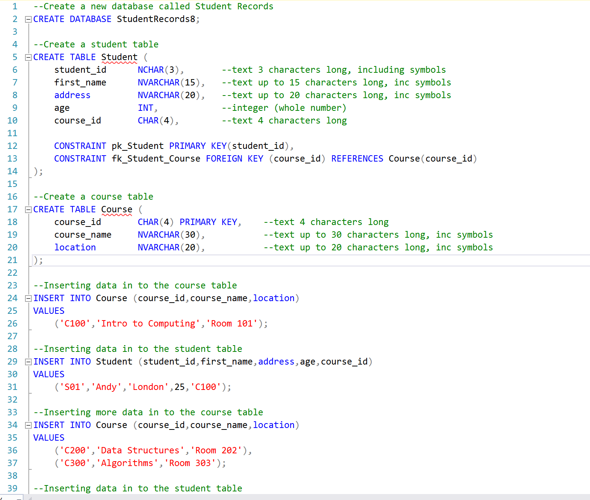

Featured Projects
Dashboards that uncover insights, and an app that puts them to work.
📱 ThinkBefore — Spend with intention
A web app that fights impulse buying by converting any price into the number of work hours it actually costs you. Enter a price and your monthly income, and ThinkBefore shows the real cost in time — turning a quick purchase into a conscious decision. Built and shipped end-to-end: pricing tiers, a 48h wishlist to let urges fade, monthly spending charts, a goal tracker, CSV export, and a companion Chrome extension that surfaces the calculator while shopping online. Launched on Product Hunt and the Chrome Web Store.
📊 Power BI — Apple's Revenue Dashboard
Collected Apple's revenue dataset from bullfincher.io, cleaned and transformed it for consistency across regions and fiscal years, then designed an interactive dashboard visualising revenue distribution across the Americas, Europe, Greater China, Japan and Asia-Pacific for 2022–2024. Key findings: the Americas remain the largest market but show slight decline; Europe shows steady growth; Greater China shows a consistent decrease — leading to recommendations on marketing investment reallocation and regional growth forecasting.


📊 Power BI — Business Performance Dashboard
An interactive dashboard analysing product performance by flavour in the UK market, highlighting units sold, gross revenue and unit cost through clear, strategic visualisations. Designed to help a sales team identify top-performing SKUs and underperforming lines — turning complex sales data into actionable business decisions.

📊 Battery Inventory Dashboard
An inventory dashboard visualising battery sales and stock levels in real time: total sales, available stock, quantity sold, and number of models tracked. Includes a pie chart of sales distribution by model (AA, C, D, 9V), and two line charts of monthly sales trends — overall and broken down by model — to help stock managers plan replenishment accurately.

🐍 Python — Predictive Analytics
End-to-end predictive analytics project in Python: loaded and explored a real dataset, handled missing values and outliers, applied supervised learning algorithms (including regression and classification), then evaluated model performance with accuracy scores and confusion matrices. Goal: demonstrate the full data science pipeline — from raw data to a model that makes reliable predictions — using pandas, scikit-learn and matplotlib.





🗄️ SQL — StudentRecords Database
Designed and built a relational database simulating a real-world academic management system. Includes a Student table (ID, name, address, age, gender, location) and a Course table, linked with primary and foreign key relationships. Demonstrates: schema design, data integrity constraints, SQL scripting and troubleshooting. Next phase: normalising the schema to 3NF, writing complex JOIN and aggregate queries, and connecting the database to a Power BI report for live academic reporting.

🌐 This portfolio
Designed and hand-coded in HTML/CSS — no templates, no frameworks. Built around a dual identity (Data Analyst × App Creator) with a filterable project grid, a freelance services section, Open Graph social previews, and a fully responsive layout. Hosted on GitHub Pages.